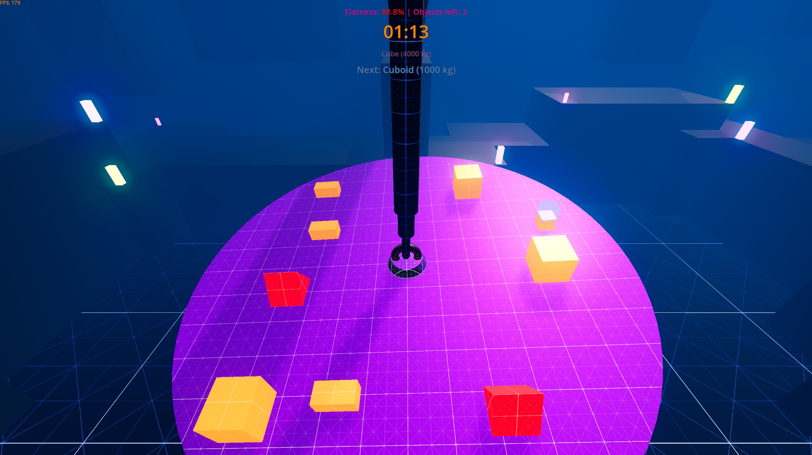

🎮 Tesztelői tapasztalat – baráti együttműködés egy fejlesztés alatt álló játékon
2025 novemberében lehetőségem nyílt csatlakozni egy fejlesztés alatt álló videójáték-projekthez tesztelőként. A játékot egy barátom fejleszti, és örömmel segítek neki a projekt finomhangolásában, hogy a végeredmény minél élvezetesebb és stabilabb legyen.
A játék egy fizikailag egymásra ható elemekből építkező logikai puzzle, amely folyamatosan fejlődik, új funkciókkal és pályákkal bővül. A közös munka során a következő feladatokat látom el:
- 🔍 Hibák feltárása: A játékmenet és a fizikai szimulációk alapos tesztelése, technikai és logikai hibák azonosítása.
- 🛠️ Fejlesztési javaslatok: Ötletek és konkrét megoldási javaslatok a hibák javítására, a játékmechanikák finomítására.
- 🎯 Élményoptimalizálás: A játékmenet áramvonalasítása, a kihívások és a játékos visszajelzések alapján történő hangolás.
Ez a projekt nemcsak szakmai fejlődést jelent számomra, hanem egy baráti együttműködés is, ahol közösen formáljuk a játék világát – lépésről lépésre, tesztről tesztre.
